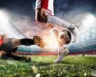

Anterior:  Siguiente:
Siguiente:
Menú:
Yo las activiades deportivas que
practico con mas frecuencia es el futbol, ya que me gusta demsaciado y
desde equeña mi familia me a inculcado el hacer ejercicio y
jugar mucho futbol, haciendo torneo stre nosotros.
Me gusta mucho verlo como practicarlo, me lllama mucho la atencion las jugadas que se realizan con estrategia y penando lo que movimiento realizaras con el balón.

Por otro lado llege a jugar basquetbol pero no con mucha frecuencia ya que me llama mas la atenció el futbol, pero cuaando no habia ninguna otra actividad jugaba basqetbol donde en este casi no destacaba ya que se me hacia un poco mas complicado de entender ya que como casi no me interesaba no ponia mucha atención en la fomr correcta de jugar.
Recuerdo tambien llege a jugar Futbol Americano ese deporte es muy
bueno si me llego a gustar pero una vez que estaba jugando con amigas
en Ciudad Deportiva una chica por querer quitar el balón le
disloco el hombro a otra chica; y desde ese momento le tengo miedo y
respeto a ese deporte.

Me gusta mucho el deporte y actividad fisica, hoy en dia asisto al gimnacio, bailo, y salgo a correr.

Yo iba a cursos de futbol fuera de la escuela y dentro de la
primaria y de la secundaria participe en torneos siendo yo delantera
derecha y goleadora a nivel nacional teniendo bajo mi cargo trofeos y
medallas.Me gusta mucho verlo como practicarlo, me lllama mucho la atencion las jugadas que se realizan con estrategia y penando lo que movimiento realizaras con el balón.
Por otro lado llege a jugar basquetbol pero no con mucha frecuencia ya que me llama mas la atenció el futbol, pero cuaando no habia ninguna otra actividad jugaba basqetbol donde en este casi no destacaba ya que se me hacia un poco mas complicado de entender ya que como casi no me interesaba no ponia mucha atención en la fomr correcta de jugar.